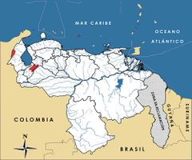

Vultur gryphus
| Cóndor | |
|---|---|
| Riesgo de extinción | |
En peligro crítico (UICN) | |
| Clasificación científica | |
| Reino: | Animalia |
| Filo: | Chordata |
| Clase: | Aves |
| Orden: | Falconiformes |
| Familia: | Cathartidae |
| Género: | Vultur |
| Especie: | Vultur gryphus |
| Nombre binomial | |
|
Vultur gryphus Linnaeus, 1758 | |
| Distribución | |
|
 Mapa de distribución de Vultur gryphus | |
Contenido
Información de Evaluación
- Categoría y Criterio Regional: En Peligro Crítico D
- Fecha de Evaluación Regional: 2015
- Evaluadores: Jesús Morales-Campos y Ariany García-Rawlins
- Categoría y Criterio Global: Casi Amenazado
Justificación
Evaluaciones Previas
1999: En Peligro Crítico (CR)
2008: En Peligro Crítico (CR)
Información General
Nombres comunes
Cóndor, buitre, Cóndor andino, Andean Condor.
Notas taxonómicas
Sinónimos
Descripción
Es el ave voladora más grande y pesada que existe en el planeta. Alcanza hasta 3,3 metros de envergadura (distancia medida de extremo a extremo, con las alas extendidas), 1,1 a 1,3 m de altura (distancia medida desde el pico hasta la base de la cola), y llega a pesar entre 9 y 16 kg. Presenta dimorfismo sexual. Los machos adultos se distinguen por poseer una carúncula carnosa, ausente en las hembras. La coloración del plumaje en ambos sexos es parda oscura cuando son inmaduros o juveniles. Los adultos son negros, con plumas blancas en el dorso de las alas y ostentan un collar de plumón blanco que no llega a completarse en la garganta. Tienen la cabeza y una parte del cuello desprovistos de plumas como resultado de la adaptación a sus hábitos carroñeros; la piel de esta zona es suave y suelta, formando pliegues de tonalidad rojiza purpúrea (Hilty 2003).
Distribución
Cordillera de los Andes, desde la sierra Nevada de Santa Marta y la sierra de Perijá por el norte, hasta Tierra del Fuego por el sur, abarcando Venezuela, Colombia, Ecuador, Perú, Bolivia, Chile y Argentina, con presencia ocasional en Paraguay y Brasil. En nuestro país se encuentra actualmente en la sierra de Perijá (estado Zulia) (Calchi y Viloria 1991, López-O. et al. 2014) y es posible que en el macizo de El Tamá (López-O. et al. 2014), así como en el núcleo de la cordillera de Mérida.
- Sistema: Terrestre, Marino
- Bioregión:
- Intervalo altitudinal (m): 5000
- Endémica: No
Situación
Ha sido incluido entre las aves con mayor prioridad de conservación en Venezuela (Rodríguez, J. P. et al. 2004b). Se le consideraba extinta en el país desde 1912, hasta que fue observada de nuevo en 1976 en el estado Mérida (Zonfrillo 1977, Phelps Jr. y Meyer de Schauensee 1979). Aunque escasos, se tienen reportes de su presencia en la sierra de Perijá (Calchi y Viloria 1991, López-O. et al. 2014). En la cordillera de Mérida no existen registros actuales de cóndores residentes, aunque en el pasado reciente algunos individuos fueron observados ocasionalmente sobrevolando las cumbres de la sierra Nevada y la sierra de La Culata. Este tipo de eventualidad fue la que motivó a comienzos de los años noventa del siglo XX, la reintroducción de Vultur gryphus en ambas serranías. Entre 1993 y 2001, 13 ejemplares nacidos en cautiverio en zoológicos de Estados Unidos y Argentina fueron traídos al país para ser liberados por etapas en los páramos de Mifafí (sierra de La Culata) y Don Pedro (sierra Nevada) (M. R. Cuesta com. pers.), pero lamentablemente ninguno logró establecerse. Múltiples factores (sociopolíticos, financieros, técnicos, científicos, ecológicos, etc.) intervinieron en el éxito del proyecto, dejando un saldo negativo. El programa de monitorización fue suspendido a principios del siglo XXI. En el pasado reciente se hicieron prospecciones en la vertiente colombiana de la sierra de Perijá y se detectó la presencia de cóndores (López-O. et al. 2014, W. M. Rojas com. pers.), lo que implica que la especie se encuentra en esa localidad compartida con nuestro país. Se carece de registros recientes de cóndores en la cordillera de Mérida. Es posible que exista en el parque nacional El Tamá debido también a su aparición confirmada en los vecinos páramos de Colombia (López-O. et al. 2014). En el ámbito global la especie se reporta como Casi Amenazada, aun cuando su situación se agrava de Sur a Norte (BirdLife International 2015). En Colombia se clasifica En Peligro, con siete núcleos poblacionales y unos 105 individuos, la mitad reintroducidos. En Ecuador se cataloga en la actualidad como En Peligro Crítico y se reportan solo 65 ejemplares en cinco poblaciones fragmentadas. En Perú es Vulnerable y en Chile, aunque se considera del mismo modo Vulnerable, es un país en el que junto con Argentina se tienen las mayores poblaciones, con cerca de 5000 individuos (Suárez, L. y García 1986, Pulido 1991, BirdLife International 2000, Granizo et al. 2002, Renjifo et al. 2002).
- EOO (km2): 8.520.000
- AOO (km2): Temporalmente sin información
- Tendencia Poblacional: Decreciendo
Amenazas
Todas las amenazas se agravan al tener en cuenta que se trata de una especie con una tasa reproductiva muy baja. El principal factor que ha contribuido a su desaparición en Venezuela ha sido la cacería, porque Vultur gryphus se considera erróneamente depredadora de animales domésticos e incluso de niños pequeños. El uso extendido de agroquímicos en los páramos, podría causar potenciales graves daños a la especie que irían desde la infertilidad hasta la muerte por envenenamiento. Otras causas estarían asociadas al deterioro ambiental y a la disminución o extinción local de herbívoros andinos.
Conservación
Está incluida en el Apéndice I de la Convención sobre el comercio internacional de especies amenazadas de fauna y flora silvestres (Cites 2014). En Venezuela se establece su veda indefinida en 1996, fecha en la que también se declara Especie en Peligro de Extinción (Venezuela 1996a, Venezuela 1996b). Su reintroducción en el núcleo de la cordillera de Mérida fue promovida a comienzos de los años noventa del siglo XX por el Banco Andino (institución financiera ya desaparecida) a través de su Proyecto Ambiental, junto con un programa de sensibilización y educación ambiental de amplio alcance en el estado Mérida. Este programa de reintroducción fue sostenido luego por Fundacóndor y finalmente por la Fundación Bioandina. Los animales murieron o emigraron por diferentes causas, por lo que la población reintroducida en Mérida ya no existe. Algunos individuos son mantenidos en cautiverio en el país bajo custodia de diversas instituciones: Asociación Civil Biocontacto del estado Mérida, parque zoológico y botánico Bararida de Barquisimeto, parque zoológico metropolitano del Zulia (parque sur) en Maracaibo, Centro de visitantes del páramo de Mifafí, parque nacional Sierra de La Culata del estado Mérida, y parque zoológico Chorros de Milla de la ciudad de Mérida, donde nacieron dos crías que representaron los primeros registros de reproducción de la especie en Venezuela. Sería oportuno intensificar las investigaciones en la sierra de Perijá y en el macizo de El Tamá, para procurar la máxima protección de los probables ejemplares silvestres allí presentes así como fomentar un estudio riguroso para conocer la distribución pasada y actual de Vultur gryphus en el país con miras a promover medidas de conservación más conectadas con la realidad.
Autorías
Autores originales
Christopher J. Sharpe, Denis Alexander Torres y Franklin Rojas-Suárez
Colaboradores
Rafael Gianni[1]
Ilustrador
Astolfo Mata
Referencias
- BirdLife International (2000). Threatened Birds of the World. The official source for birds on the IUCN Red List. Lynx Edicions. Barcelona, España. 864 pp.
- BirdLife International. (2015). IUCN Red List for birds. Disponible en https://www.birdlife.org, consultada el 08/07/2015.
- Calchi, R. y Viloria, A. L. (1991). Occurrence of the Andean Condor in the Perijá mountains of Venezuela. Wilson Bulletin 103: 720-722.
- eBird. 2017. Kvarnback, J. y Rosales, A. (2016): Lista de aves S31805328 Paso del Cóndor - Mérida - Venezuela - miércoles 28 de septiembre, 10:30 HLV [en línea]. eBird, Ithaca, New York. Disponible en: https://ebird.org/ebird/view/checklist/S31805328. [Consulta: 17 abril 2017].
- eBird. 2017. Kvarnback, J. y Rosales, A. (2016): Lista de aves S31798368 Laguna de Mucubají - Mérida - Venezuela- miércoles 28 de septiembre, 09:00 HLV [en línea]. eBird, Ithaca, New York. Disponible en: https://ebird.org/ebird/view/checklist/S31798368. [Consulta: 18 abril 2017].
- eBird. 2017. eBird: Vultur gryphus mapa de distribución geográfica [en línea]. eBird, Ithaca, New York. Disponible en: https://ebird.org/ebird/map/andcon1?neg=true&env.minX=&env.minY=&env.maxX=&env.maxY=&zh=false&gp=false&ev=Z&mr=1-12&bmo=1&emo=12&yr=all&byr=1900&eyr=2017. [Consulta: 18 abril 2017].
- Gianni, R. (2015): Los Nombres Comunes de las Aves de Venezuela. Recuperado de: https://4m5dx-eco.blogspot.com/2015/01/los-nombres-comunes-de-las-aves-de.html[7]
- Granizo, T., Pacheco, C., Ribadeneira, M. B., Guerrero, M. y Suárez, L. (2002). Libro Rojo de las Aves del Ecuador. SIMBIO, Conservación Internacional, EcoCiencia, Ministerio del Ambiente, UICN. Quito, Ecuador.
- Hilty, S. L. (2003). Birds of Venezuela, second edition. Princeton University Press. Princeton, NJ, USA. 878 pp.
- Phelps Jr., W. H. y Meyer de Schauensee, R. (1979). Una guía de las Aves de Venezuela. Gráficas Armitano. Caracas. 484 pp.
- Pulido, V. (1991). El Libro Rojo de La Fauna Silvestre del Perú. Instituto Nacional de Investigación Agraria y Agroindustrial. Lima, Perú. 219 pp.
- Renjifo, L. M., Franco-Maya, A. M., Amaya-Espinel, J. D., Kattan, G. H. y López-Lanús, B. (2002). Libro Rojo de Aves de Colombia. Instituto Alexander von Humboldt, Ministerio del Medio Ambiente. Bogotá, Colombia.
- Rodríguez, J. P. y Rojas-Suárez, F. (1999). Libro Rojo de la Fauna Venezolana, segunda edición. PROVITA, Fundación Polar. Caracas. 444 pp.
- Rodríguez, J. P. y Rojas-Suárez, F. (Eds.) (2008). Libro Rojo de la Fauna Venezolana, tercera edición. Provita y Shell Venezuela, S. A. Caracas, Venezuela. 364 pp.
- Rodríguez, J. P., Rojas-Suárez, F. y Sharpe, C. J. (2004b). Setting priorities for the conservation of Venezuela's threatened birds. Oryx 38(4): 373-382.
- Sharpe, C. J., Torres, D. A. y Rojas-Suárez, F. (2015). Cóndor, Vultur gryphus. En: J.P. Rodríguez, A. García-Rawlins y F. Rojas-Suárez (eds.) Libro Rojo de la Fauna Venezolana. Cuarta edición. Provita y Fundación Empresas Polar, Caracas, Venezuela. Recuperado de: animalesamenazados.provita.org.ve/content/condor [8] Lun, 17/04/2017 - 23:28
- Verea, C., G. A. Rodríguez, D. Ascanio y A. Solórzano. 2014. Los Nombres Comunes de las Aves de Venezuela (2da Edición). Comité de Nomenclatura Común de las Aves de Venezuela, Unión Venezolana de Ornitólogos (UVO), Caracas, Venezuela.
- Venezuela. (1996a). Decreto 1485: Animales Vedados para la Caza. Gaceta Oficial No. 36.059 - 7 de octubre de 1996. Caracas.
- Venezuela. (1996b). Decreto 1486: Especies en Peligro de Extinción. Gaceta Oficial No. 36.062- 10 de octubre de 1996. Caracas.
- Zonfrillo, B. (1977). Re-discovery of the Andean Condor (Vultur gryphus) in Venezuela. Bulletin British Ornithologists' Club 97: 17-18.